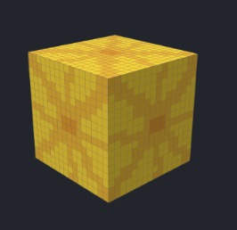
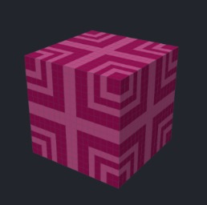
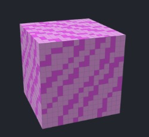

What in the World?
Advika Bhike, Catherine Chu, Eshani Jha, Malavikha Sudarshan
GitHub: https://github.com/cal-cs184-student/matcha
Website: https://cal-cs184-student.github.io/matcha/index.html
Milestone Slides: https://docs.google.com/presentation/d/1D_7YjyccJDzfQMiy-Agueb29uBKTeaN1GnEAWu4uVr0/edit?usp=sharing
Milestone Video: https://github.com/cal-cs184-student/matcha
Summary of What We Accomplished
These past couple weeks, we adjusted our plan based on feedback, and honed in on designing textures for our new world, as well as getting started with our codebase. The technologies we used are Blockbench and Optifine.
Preliminary Results
Here are some of the textures we designed (see slides and video for more examples):

|

|

|
|

|

|

|
Reflection on Progress Relative to our Plan
We finished all the renders like we wanted to. We didn’t quite get to implementing any of the lighting components as most of our work these past two weeks focused on research and understanding our tasks, as well as navigating the learning curve of some of the tools we used. 3 of us worked on textures and 1 of us started coding, and we successfully finished all of our target textures, packaged a sample texture into a shaderpack and texture-mapped this onto a block.
Updating our Work Plan
Since we’re all finished with our textures, we’re going to go all hands on coding.
Week 3
Malavikha and Advika
- Begin working on non-photorealistic shaders
- Get started on writing functions for watercolor shaders
- Get started on writing functions for cartoon lighting
Eshani and Catherine
- Continue updating shaders to include the new textures
- Upload for Lorax theme
- Upload for Japan theme
Week 4
- If needed, all four of us can debug the non-photorealistic shaders or the texture shaders (whichever one is left). If programs for both shaders are unfinished, we can help each other out and continue to work in the groups we decided.
- Finish up tasks from last week and coding for the different shaders.
- If we have time, Advika will make new entities for the fish and Malavikha will make new entities for the butterfly, and Eshani and Catherine will get started on coding their motion. Since this is part of the ambition plan, the delegation of these tasks is more subject to change.